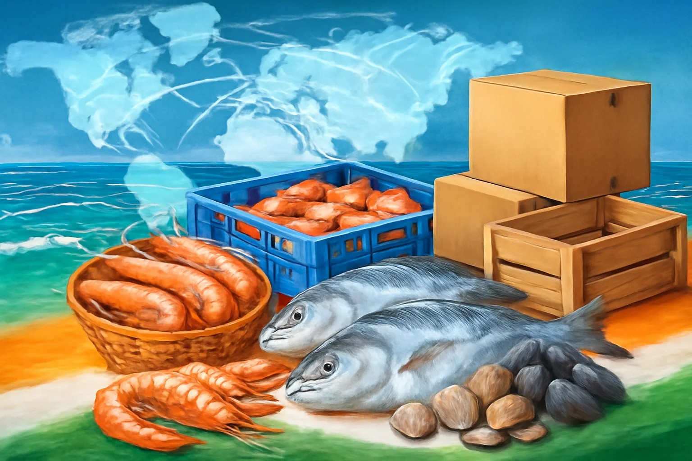

Explore Marine Products
Welcome to our Community Service Project. Dive into the world of marine resources, processing methods, and their benefits to society.
Introduction to Marine Products

The marine products community refers to the network of industries, businesses, and individuals involved in the production, distribution, and consumption of marine-based products.
Key sectors include Marine Food Products, Marine Biotechnology, Marine Energy Products, and Marine Tourism.
Week 1: Introduction to Aqua Farming


During the first week, we focused on understanding aqua farming. It involves cultivating freshwater and saltwater populations under controlled conditions.
Week 2: Pond Structure and Maintenance


We studied pond structures. The optimum size of a fish pond is rectangular with a depth of 5 to 6 feet.
Week 3: Diseases, Feeds, and Chemicals


We learned about fish diseases like 'Red Pest' and studied aqua feeds like fishmeal and soybean meal that provide essential nutrients.
Week 4: Identifying Fish Diseases


We observed major fish diseases causing problems in the ponds, such as Head and Lateral disease, Eye problems, and Swim bladder disease.
Week 5: Implementing Treatments


In week five, we successfully implemented treatments. For example, we cleaned the pond with a potassium permanganate bath to treat infections.
Week 6: Growth, Feeding, and Harvesting


The final week focused on growth and harvesting. We learned that freshwater prawn farming requires water salinity of 3-4 ppt and strict calcium management.
Conclusion & Mini Project
To conclude, we focused on Sustainable Aquaculture Practices for Marine Products to ensure the long-term health of our oceans (e.g., RAS and IMTA).
Marine Products Project
Project Summary
This project aims to analyze the availability, processing, and economic importance of marine products in local coastal communities.
Project Objectives
- Identify common marine resources.
- Study processing and preservation methods.
- Understand economic benefits to locals.
- Promote sustainable harvesting.
CSP PHOTO GALLERY


Processing Methods
How are they processed?
Proper processing is essential to increase their shelf life and maintain nutritional value.
- 1. Sun Drying: Removing moisture using sunlight.
- 2. Salting: Adding salt to draw out water.
- 3. Freezing: Rapidly lowering temperature.
- 4. Canning: Sealing products in airtight containers.
"Proper processing prevents waste and ensures food security for millions worldwide."
Marine Resources
Edible Resources
Includes various species of fish, crabs, lobsters, shrimp, and seaweeds.
Industrial Resources
Fish oils, fish meal for agriculture, and decorative shells.
Medicinal Resources
Sponges and corals are researched for anti-cancer and anti-inflammatory drugs.
Mineral Resources
Salt extraction is common, and oceans provide valuable mineral nodules.
About Our Team
We are a dedicated group of students working on our Community Service Project.

Challa Tharun Yadav
Project Leader

B. Chennakesava Reddy
Data Analyst

Ch. Venkatesh
Researcher

B. Tharun
Field Reporter